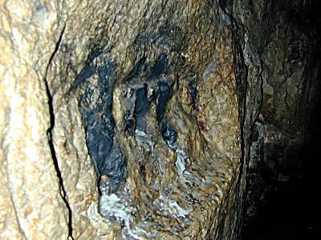

Hezekiah's Tunnel
by Wayne D. Turner
From BibleTrack
Copyright 2003-2026
One of the remarkable stories of the Old Testament is the deliverance of Jerusalem from the Assyrian siege in 701 B.C. Assyria had conquered all the surround territory, including all of the Northern Kingdom of Israel and even Judah. But they had not conquered Jerusalem. Sennacherib surrounded the city and tried to starve them out, but it did not work. For details on the attack, see the notes on II Kings 18:13-19:37; II Chronicles 32:9-22; Isaiah 36-37.
Why was Jerusalem able to endure? God had promised Hezekiah, through Isaiah, that Assyria would fail in their siege (see passages above). However, Hezekiah had made an infrastructure improvement that saved the day - running water for Jerusalem. Well...yes...Hezekiah also made the walls around the city higher and manufactured weapons specifically designed to be used from the top of the walls, but it was the running water inside Jerusalem that kept the Assyrians from being able to starve the people out of the city.

Here's a photo of a portion of the tunnel.
Courtesy of BiblePlaces.com
This running water is mentioned in the preparation for war in II Chronicles 32:2-4 (see notes):
2 And when Hezekiah saw that Sennacherib was come, and that he was purposed to fight against Jerusalem,
3 He took counsel with his princes and his mighty men to stop the waters of the fountains which were without the city: and they did help him.
4 So there was gathered much people together, who stopped all the fountains, and the brook that ran through the midst of the land, saying, Why should the kings of Assyria come, and find much water?
This tunnel of 1,750 feet supplied the Pool of Siloam inside Jerusalem (a walled city) with fresh water from the Spring of Gihon outside the city. In 1880, an inscription was discovered by a boy who was bathing in the waters of the Gihon Spring. After studying the inscription, it was determined that it had been carved in stone there by Hezekiah's workers to chronicle their success. The tunnel had been hewn from stone coming from two directions - from within the city at the Pool of Siloam and from without the city at the Spring of Gihon. The workers, according to the inscription, met in the middle. The tunnel supplied fresh water to the inhabitants of Jerusalem during the siege of the Assyrians in 701 B.C. Because of the availability of fresh water to Jerusalem coupled with the lack of water outside of Jerusalem (because of the water diversion), the Jews were able to outlast the Assyrians in the attempted, but unsuccessful, takeover. After some time passed, 185,000 Assyrian soldiers just miraculously died in their sleep during one night camped out around Jerusalem. Sennacherib left his post around Jerusalem to return back to Assyria - never to return again. God had not only given Hezekiah his promise that he would not be conquered by the might Assyrians, he had given him the wisdom on how to accomplish this supernatural resistance.
We have two other passing mentions of Hezekiah's water-supply project. One is II Chronicles 32:30 (see notes), "And Hezekiah himself hath stopped the upper source of the waters of Gihon, and directeth them beneath to the west of the city of David, and Hezekiah prospereth in all his work." The other reference is II Kings 20:20 (see notes), "And the rest of the acts of Hezekiah, and all his might, and how he made a pool, and a conduit, and brought water into the city, are they not written in the book of the chronicles of the kings of Judah?" Now...let's get the rest of the story.

On the wall of the tunnel is an inscription left by the workman at the place where they met after digging through from both sides.
These photos and more are available for viewing at BiblePlaces.com. These two photos are used here with their permission.